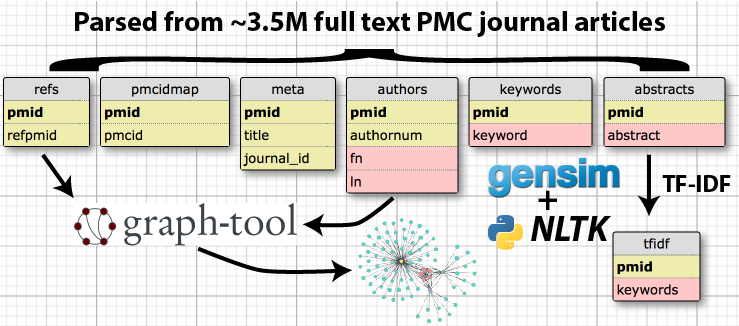

Citation Explorer was created to better understand the citation networks and co-authorship networks that underlie human knowledge.
By pulling in the full set of open access publications from PubMed Central, we are able to examine both interesting global statistics (such as average citation patterns, self cites, and typical co-authorship networks).
For individual papers and authors, I've created a tool which allows the user to dynamically generate a publication summary, graphical citation network, and suggested keywords based on the data available in SQL. Additionally, by clicking an author's name, the user can view per-author statistics, comparing them to global averages, and can view a graphical network of all of the author's collaborators to two degrees.
3.5 million full text articles collected from PubMed Central, saved using gzip to keep data size manageable. Then, using a parser created primarily using Beautiful Soup, data is read from each article and stored into SQL tables, keying the data against the PMIDs which uniquely identify the articles.
The graph-tool python was used to construct two graph networks, since the networks are far too large to load into memory with a tool like NetworkX.
The directed citation graph network has nodes which represent publications and the directed edges which connect publications to the papers they cite. This network contains 7.7 million nodes and 31 million edges. This number is larger than the number of papers parsed (3.5M) because many citations are to publications which are not open access, therefore my parser creates a target node and edge linking to publications which are not contained in my dataset.
The undirected co-authorship graph network has nodes representing authors and edges indicating that they have appeared on a publication together. The network contains 2.4 million nodes and 210 million edges.
The graph network was then serialized to SQL so that it can be interactively querried in the web app without loading the network into memory
The sklearn python library was used to construct a TF-IDF model of the abstracts in the corpus, using stopwords provided by NLTK. After constructing the TF-IDF model, each article's cosine similarity with every other article was evaluated and ranked in descending order to suggest related articles to the user.
Due to the high computational cost of the calculation, this computation was only performed for the ~1000 articles that the webapp randomly choses between when the user clicks the random button.
After generating the SQL tables of parsed data, it is interesting to begin exploring some of the global statistics. To begin with, I plotted histograms of the number of incoming citations and outgoing citations for every publication:
Incoming Citations: These follow the expected trend, peaking at 0 and tailing off towards higher numbers of citations
Outgoing Citations: As expected, there is a peak at the most common number of citations (~25), tailing off in either direction
You can dynamically generate paper citation networks, co-authorship networks and suggested keywords here:
Live Demo